İstemler: melies-kesit.mp4
Erken dönem siyah-beyaz bir sessiz film kesiti: dev bir top etrafında sahnelenen kutlama, yüzlü Ay'a inen mermi ve Ay yüzeyinde toplanan gezginler.
Ortak stil: silent-era black and white film, painted theatrical backdrops, static locked-off proscenium camera, flat stage lighting, heavy film grain, scratches and flicker, 4:3 frame with black pillarbox bars
Sahne 1
2.5 sn · 0-2. sn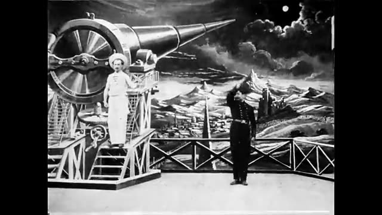
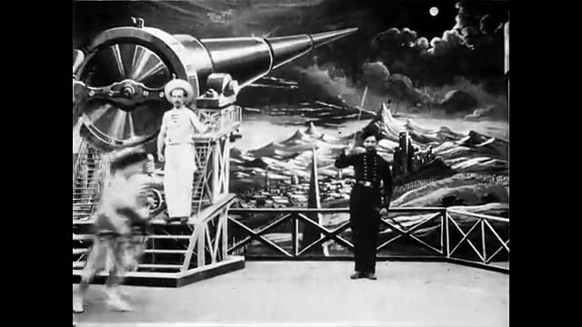
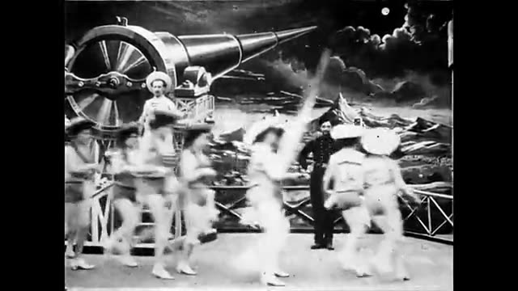
Dev bir topun yanında platformda duran bir denizci, sağda ise selam duran üniformalı bir adam var. Soldan dans eden kadınlar akın etmeye başlıyor.
| Kamera | Sabit, tam boy, göz hizasında; tiyatro sahnesi gibi karşıdan. |
|---|---|
| Işık | Düz, yumuşak sahne ışığı; boyalı gökyüzünde parlak bir ay. |
| Konu / hareket | Platformda beyaz giysili denizci, sağda selam duran subay; soldan hareketle bulanıklaşan kadın figürleri giriyor. |
| Doku / renk | Siyah-beyaz, yüksek kontrast, yoğun film tanesi, boyalı arka plan. |
| Geçiş | Aynı mekânda, kalabalık arttıkça kesimle devam ediyor. |
A static, locked-off wide shot of a theatrical stage: a giant painted cannon with a huge wheel and a long barrel on a wooden scaffold at left, a sailor in a white cap standing on its platform, and a uniformed officer saluting at right before a painted moonlit landscape of mountains and a small town. A blurred troupe of dancing women in short costumes and hats sweeps in from the left. Eye-level proscenium camera, no movement, 2.5 seconds. Flat even stage lighting, high-contrast black and white, heavy film grain. Silent-era black and white film, painted theatrical backdrops, static locked-off proscenium camera, flat stage lighting, heavy film grain, scratches and flicker, 4:3 frame with black pillarbox bars.
Sahne 2
2.5 sn · 2-5. sn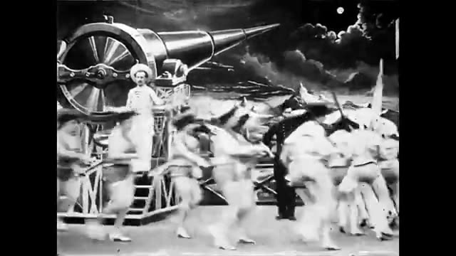
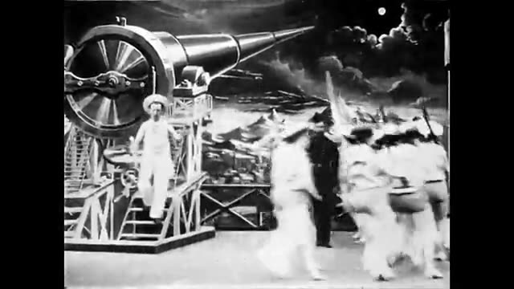
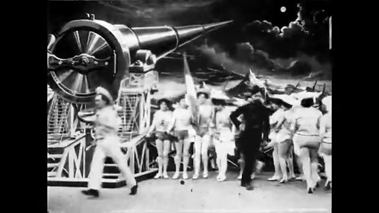
Sahne kalabalıklaşıyor: kadınlar ve denizciler koşuşuyor, merdivenden inen denizci sola koşuyor, sonunda kadınlar sıra oluyor.
| Kamera | Sabit, aynı tam boy çerçeve. |
|---|---|
| Işık | Düz sahne ışığı, hareket eden figürlerde hareket bulanıklığı. |
| Konu / hareket | Kalabalık dans eden kadınlar ve beyaz giysili denizciler; denizci platform merdivenlerinden iniyor; kadınlar bayrakla sıraya diziliyor, subay sağda. |
| Doku / renk | Siyah-beyaz, bulanık hızlı hareket, film tanesi. |
| Geçiş | Düzenli sıra oluşunca bir sonraki sahneye kesimle geçiyor. |
Static wide stage shot in front of a giant painted cannon on a wooden scaffold: a chaotic crowd of women in short costumes and sailors in white rushes across the stage with motion blur, a sailor hurries down the scaffold steps and runs left, and the women quickly settle into a line holding a flag while a uniformed officer stands at right. Locked-off eye-level proscenium camera, 2.5 seconds. Flat stage lighting, painted moonlit backdrop. Silent-era black and white film, painted theatrical backdrops, static locked-off proscenium camera, flat stage lighting, heavy film grain, scratches and flicker, 4:3 frame with black pillarbox bars.
Sahne 3
5.4 sn · 5-10. sn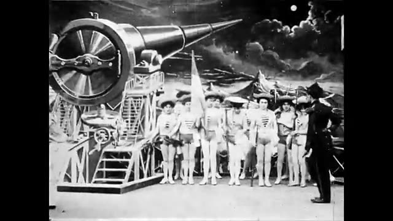
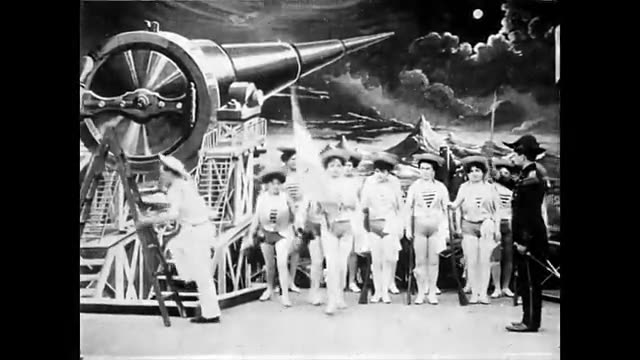
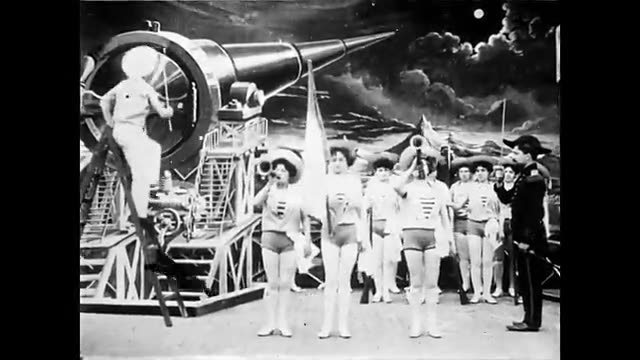
Şapkalı kadınlar bir sıra halinde duruyor, sağda subay emir veriyor. Bir denizci merdivenle topa tırmanıyor, bazı kadınlar trompet gibi bir şeyi dudaklarına götürüyor.
| Kamera | Sabit, tam boy. |
|---|---|
| Işık | Düz sahne ışığı, arka planda boyalı bulutlu gökyüzü. |
| Konu / hareket | Kadınlar sıralı ve hazır; sol tarafta denizci ayakta merdivene çıkıyor; sağda subay kılıçla işaret veriyor. |
| Doku / renk | Siyah-beyaz, hafif titreme, film tanesi. |
| Geçiş | Denizci topun başına ulaşırken kesimle devam ediyor. |
Static wide shot on a theatrical stage with a giant painted cannon at left: a line of women in short striped costumes and straw hats stands at attention holding a flag, a uniformed officer with a sword at right gives orders, and a sailor in white leans a ladder against the cannon and starts climbing while some women raise small horns to their lips. Locked-off eye-level proscenium camera, 5.4 seconds. Flat stage lighting, painted cloudy night backdrop. Silent-era black and white film, painted theatrical backdrops, static locked-off proscenium camera, flat stage lighting, heavy film grain, scratches and flicker, 4:3 frame with black pillarbox bars.
Sahne 4
5.4 sn · 10-16. sn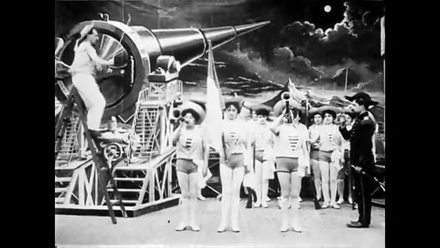
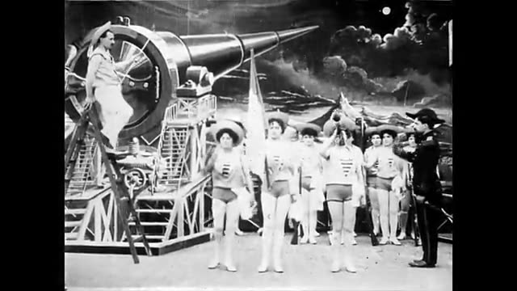
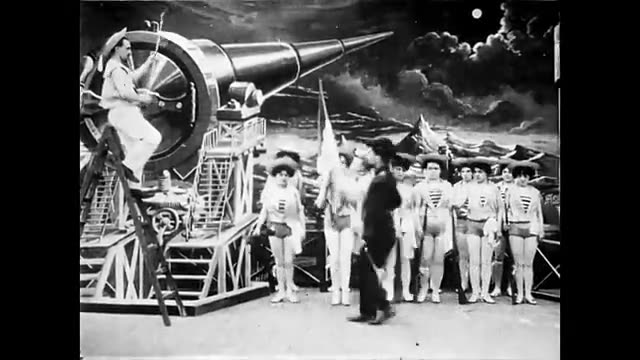
Denizci merdivenin tepesinde topun arkasında çalışıyor. Subay sahnenin ortasına yürüyor, kadınlar iki yana sıra olup bekliyor.
| Kamera | Sabit, tam boy. |
|---|---|
| Işık | Düz sahne ışığı. |
| Konu / hareket | Merdivende denizci topun çarkıyla uğraşıyor; subay sağdan ortaya yürüyor; kadın dizisi uzuyor. |
| Doku / renk | Siyah-beyaz, yumuşak griler, film tanesi. |
| Geçiş | Ateşleme hazırlığı biterken kesimle devam ediyor. |
Static wide stage shot: a sailor in white stands high on a ladder leaning against a giant painted cannon and works at its large wheel, while a uniformed officer with a sword walks from the right toward the center of the stage and a long line of women in striped costumes and straw hats with a flag waits in formation. Locked-off eye-level proscenium camera, 5.4 seconds. Flat stage lighting, painted moonlit sky. Silent-era black and white film, painted theatrical backdrops, static locked-off proscenium camera, flat stage lighting, heavy film grain, scratches and flicker, 4:3 frame with black pillarbox bars.
Sahne 5
3.6 sn · 16-19. sn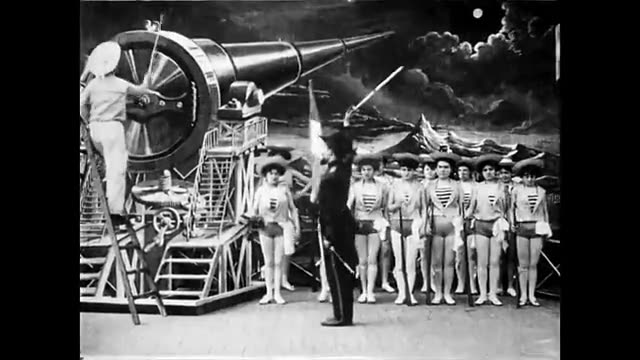
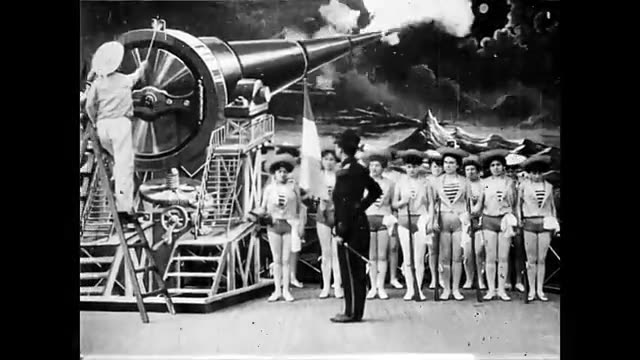
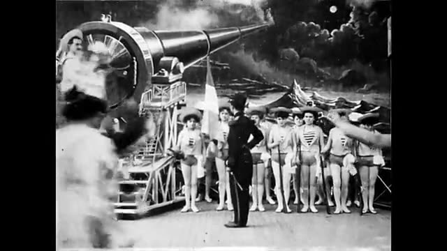
Subay kılıcını kaldırıyor, top ateşleniyor ve namludan beyaz duman çıkıyor. Ardından ön plan bulanık bir kalabalıkla doluyor.
| Kamera | Sabit, tam boy. |
|---|---|
| Işık | Düz ışık; duman beyaz bir bulut olarak çıkıyor. |
| Konu / hareket | Subay sırtı dönük kılıç kaldırıyor; denizci merdivende; namlu duman püskürtüyor; ön plana insanlar koşuyor. |
| Doku / renk | Siyah-beyaz, dumanda yüksek parlaklık, hareket bulanıklığı. |
| Geçiş | Kalabalık kameraya doğru dolarken kesimle devam ediyor. |
Static wide stage shot: a uniformed officer with his back partly to camera raises a sword, the giant painted cannon fires and a thick white cloud of smoke billows from its barrel, the sailor on the ladder beside it, women in a line looking on, then blurred figures rush across the foreground. Locked-off eye-level proscenium camera, 3.6 seconds. Flat stage lighting, painted night sky. Silent-era black and white film, painted theatrical backdrops, static locked-off proscenium camera, flat stage lighting, heavy film grain, scratches and flicker, 4:3 frame with black pillarbox bars.
Sahne 6
7.6 sn · 19-27. sn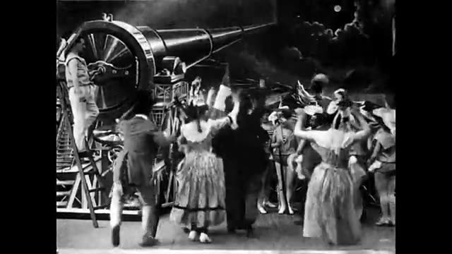
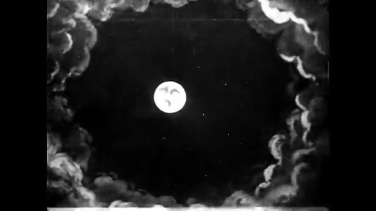
Önce kutlama yapan kalabalık sahneyi dolduruyor (kollar havada, etekli kadınlar ve erkekler). Sonra gece gökyüzünde bulutlarla çevrili küçük bir dolunay beliriyor; üzerinde belli belirsiz bir yüz var.
| Kamera | Sabit; kalabalık sahnesi tam boy, sonra ayın olduğu boyalı gökyüzü çerçevesi. |
|---|---|
| Işık | Önce düz sahne ışığı; sonra koyu gökyüzünde parlak beyaz ay. |
| Konu / hareket | Kutlayan insanlar topun önünde; ardından ortada küçük, parlak bir ay, çevresinde koyu bulut kıvrımları. |
| Doku / renk | Siyah-beyaz; ay çok parlak, çevre derin siyah, bulutlar boyalı. |
| Geçiş | Kalabalıktan ay görüntüne çapraz geçişle (kesim bulucu yakalamamış olabilir), sonra ay büyümeye başlıyor. |
Opening on a static wide stage shot of a cheering crowd of men and women in period dress with raised arms in front of a giant painted cannon, then dissolving to a painted night sky: a small bright full moon with a faint frowning face sits at the center, framed by a ring of dark billowing painted clouds with bright rims, tiny stars sparkling. Locked-off camera, the moon slowly growing, 7.6 seconds. Flat theatrical lighting, deep black sky. Silent-era black and white film, painted theatrical backdrops, static locked-off proscenium camera, flat stage lighting, heavy film grain, scratches and flicker, 4:3 frame with black pillarbox bars.
Sahne 7
7.6 sn · 27-35. sn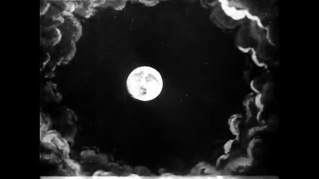
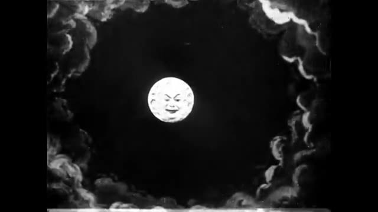
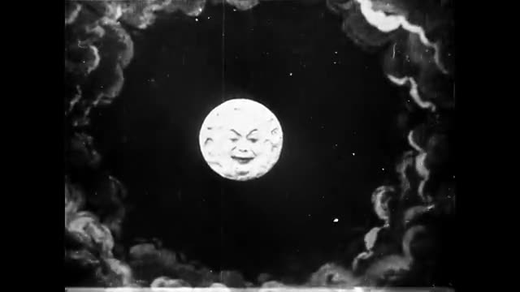
Ay yaklaşıyor ve büyüyor; yüzü netleşiyor, sırıtan bir insan yüzü ve kaşlar görünüyor. Bulut çerçevesi sabit.
| Kamera | Sabit çerçeve; ayın büyümesi yaklaşma hissi veriyor (zoom ya da nesnenin yaklaşması). |
|---|---|
| Işık | Ay içten parlıyor; kenarlarda hafif kontrast. |
| Konu / hareket | Ortada büyüyen ay, kırışık/kraterli yüzeyde sırıtan bir yüz; çevresinde boyalı bulutlar, birkaç yıldız. |
| Doku / renk | Siyah-beyaz, ay yüzeyinde kraterli doku, film tanesi ve dikey çizikler. |
| Geçiş | Ay ekranı doldurmaya devam ederken kesimle devam ediyor. |
Static shot of a painted night sky framed by dark billowing painted clouds with bright rims: a full moon with a human face, smiling slyly with heavy brows, slowly grows larger as if approaching the camera, its cratered surface becoming more detailed, a few stars twinkling. Locked-off frame, steady approach, 7.6 seconds. Self-lit glowing moon against a deep black sky. Silent-era black and white film, painted theatrical backdrops, static locked-off proscenium camera, flat stage lighting, heavy film grain, scratches and flicker, 4:3 frame with black pillarbox bars.
Sahne 8
7.6 sn · 35-42. sn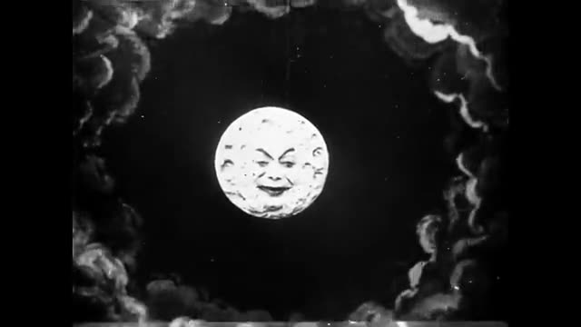
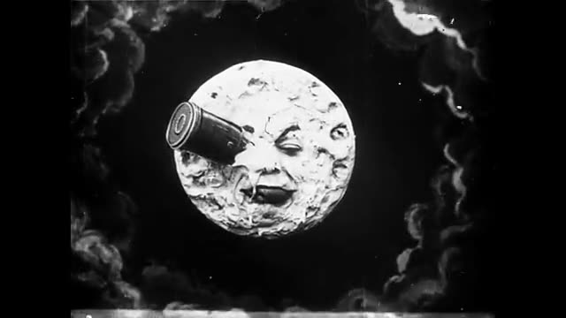
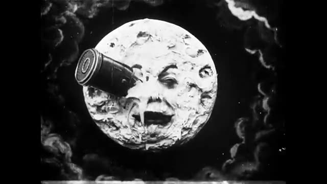
Ay ekranı iyice dolduruyor, yüzü kıvrılıp acıyor gibi; mermi biçimli bir kapsül yüzün gözüne saplanıyor ve ay yüzü ifadesini buruşturuyor.
| Kamera | Sabit; ay yaklaşmaya devam ediyor, sonra çerçeve neredeyse ay ile doluyor. |
|---|---|
| Işık | Ay parlak, yüzey dokusu belirgin; arka plan koyu. |
| Konu / hareket | Büyük ay yüzü; sol üstten gelen silindirik kapsül sağ gözünün içine gömülmüş; yüz buruşuk. |
| Doku / renk | Siyah-beyaz, kraterli kabartma doku, kapsülde metalik parlama. |
| Geçiş | Ay yüzü çerçeveyi doldururken ay yüzeyi manzarasına kesimle geçiyor. |
Static shot of a huge painted full moon with a carved human face filling most of the frame against a dark cloudy sky: a bullet-shaped metal capsule has just struck and is lodged in the moon's right eye, and the face winces and grimaces, mouth open, its cratered plaster surface in sharp relief. Locked-off frame, moon still slightly growing, 7.6 seconds. Bright self-lit moon, deep black sky. Silent-era black and white film, painted theatrical backdrops, static locked-off proscenium camera, flat stage lighting, heavy film grain, scratches and flicker, 4:3 frame with black pillarbox bars.
Sahne 9
5.5 sn · 42-48. sn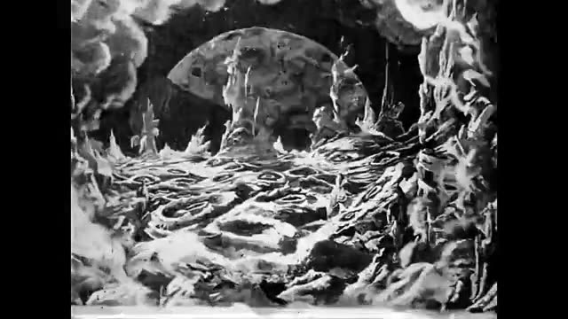
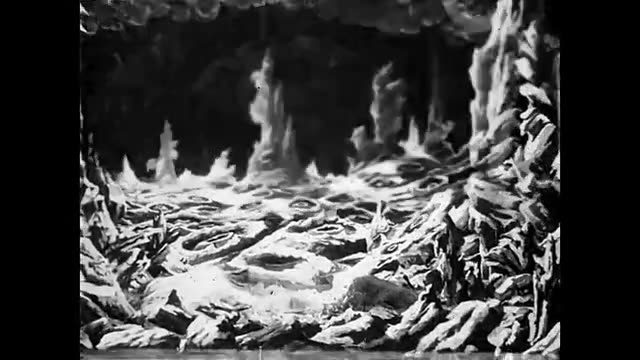
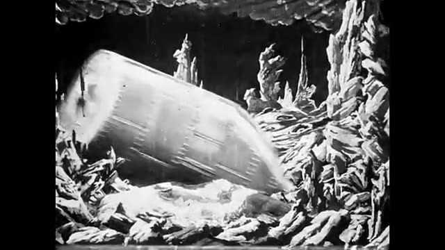
Ay yüzeyi: sivri kayalar, kraterli zemin, arka planda büyük bir ay. Sonra sahne boşalıyor ve silindirik kapsül yukarıdan yamuk düşüp yere oturuyor.
| Kamera | Sabit; boyalı kaya sahnesi, simetrik çerçeve. |
|---|---|
| Işık | Düz ışık; kayalar parlak, boşluk koyu, arkada bulut tavan. |
| Konu / hareket | Sivri kayalarla çevrili çukur manzara; arka plandaki gezegen sonra kaybolur; kapsül yukarıdan düşüp eğik duruyor. |
| Doku / renk | Siyah-beyaz, kabartmalı kaya dokusu, beyaz sis, film tanesi. |
| Geçiş | Kapsül yere yerleşince insanlar çıkıyor, kesimle devam. |
Static shot of a painted lunar landscape on a theatrical set: jagged tall rock spires on both sides, a cratered misty floor, a huge cratered planet visible in the black sky at the back that fades out, then a riveted cylindrical metal capsule drops from above and thuds onto the ground at a tilt, shaking slightly. Locked-off symmetrical frame, 5.5 seconds. Flat lighting with bright white rocks and a deep black sky. Silent-era black and white film, painted theatrical backdrops, static locked-off proscenium camera, flat stage lighting, heavy film grain, scratches and flicker, 4:3 frame with black pillarbox bars.
Sahne 10
6.8 sn · 48-54. sn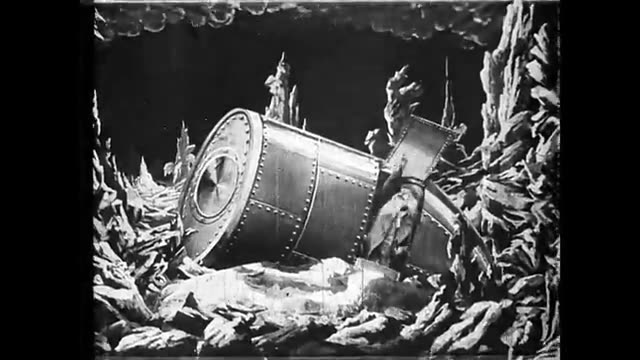
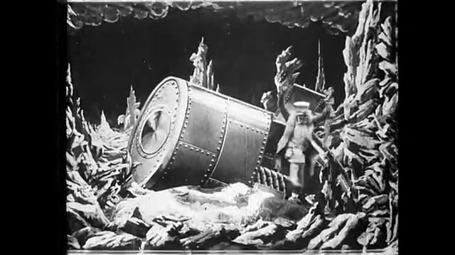
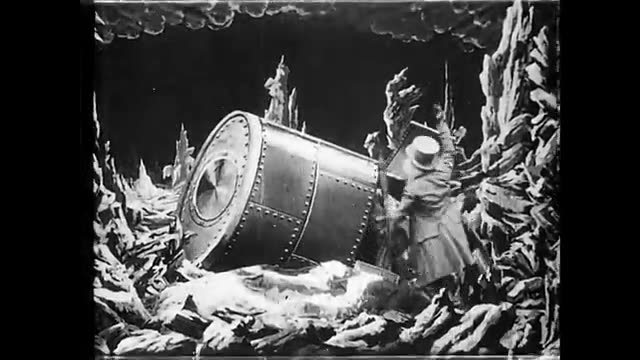
Kapsülün yan kapağından silindir şapkalı bir adam çıkıyor, kapsülün yanına geliyor; ardından uzun paltolu ikinci bir adam kapsülün arkasından görünüyor.
| Kamera | Sabit, tam boy; kapsül ortada eğik. |
|---|---|
| Işık | Düz ışık; kayalar parlak, arka plan karanlık. |
| Konu / hareket | Eğik duran perçinli kapsül; üstten ve yandan inen şapkalı adamlar; birisi kapıdan çıkıp yere basıyor. |
| Doku / renk | Siyah-beyaz, perçinli metal doku, kaya kabartması, film tanesi. |
| Geçiş | Adamlar toplanırken kesimle devam ediyor. |
Static wide shot of a painted lunar landscape of jagged rock spires with a riveted cylindrical metal capsule lying tilted on the ground at center: a man in a tall top hat and a long coat climbs out of a hatch on its side and steps down, followed by a second man in a long coat who appears from behind the capsule, looking around. Locked-off eye-level camera, 6.8 seconds. Flat lighting, bright white rocks, black cloudy sky above. Silent-era black and white film, painted theatrical backdrops, static locked-off proscenium camera, flat stage lighting, heavy film grain, scratches and flicker, 4:3 frame with black pillarbox bars.
Sahne 11
6.9 sn · 54-61. sn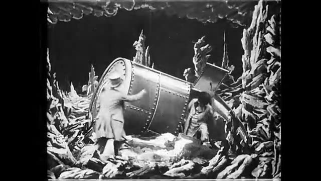
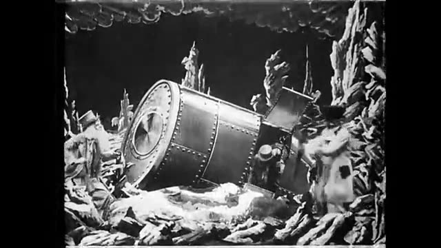
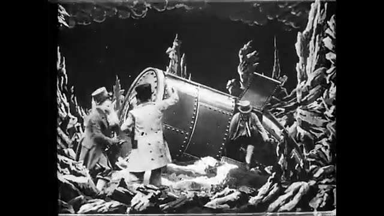
Daha çok adam kapsülden iniyor; paltolu ve şapkalı adamlar kapsülün ucuna sarılıp itmeye ya da incelemeye başlıyor.
| Kamera | Sabit; sahne giderek daha kalabalık. |
|---|---|
| Işık | Düz ışık. |
| Konu / hareket | Üç dört adam kapsülün ağız tarafında toplanıp ellerini ona koyuyor; biri melon şapkalı. |
| Doku / renk | Siyah-beyaz, kaya ve metal doku. |
| Geçiş | Adamlar kapsülü hareket ettirirken kesimle devam ediyor. |
Static wide shot of a painted lunar rock landscape: three or four men in long coats and hats (one in a top hat, one in a bowler) gather around the open end of a tilted riveted cylindrical capsule, pressing their hands against it and gesturing excitedly to each other, more men stepping out from behind it. Locked-off eye-level camera, 6.9 seconds. Flat lighting, bright white rock spires, black sky. Silent-era black and white film, painted theatrical backdrops, static locked-off proscenium camera, flat stage lighting, heavy film grain, scratches and flicker, 4:3 frame with black pillarbox bars.
Sahne 12
6.8 sn · 61-68. sn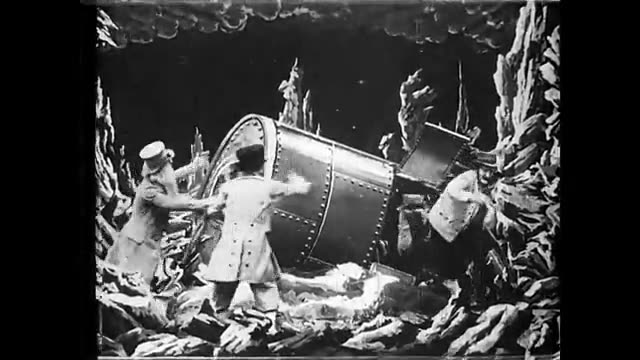
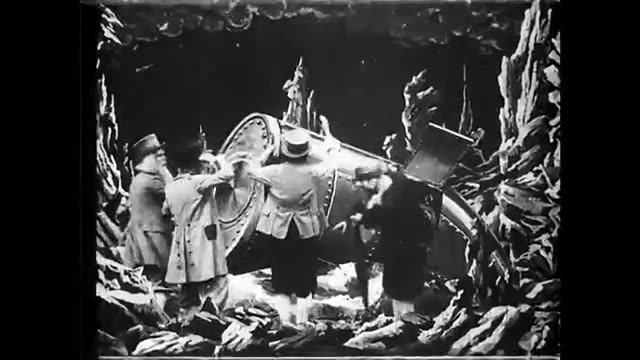
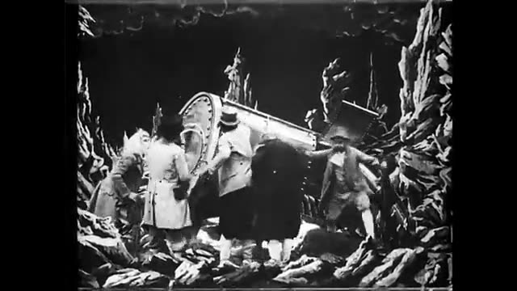
Adamlar kapsülün çevresinde yoğunlaşıp onu iterek kaldırmaya çalışıyor; birisi kapsülün üstüne eğilmiş, bazıları sırtını dönmüş.
| Kamera | Sabit, aynı kare. |
|---|---|
| Işık | Düz ışık. |
| Konu / hareket | Beş altı adam kapsülün çevresinde omuz omuza itiyor; kapsül yukarı doğru kalkıyor gibi. |
| Doku / renk | Siyah-beyaz, film tanesi, hareket bulanıklığı. |
| Geçiş | Çabanın sonunda kesimle son sahneye geçiyor. |
Static wide shot of a painted lunar rock landscape: five or six men in coats and hats crowd shoulder to shoulder around a riveted cylindrical capsule, their backs partly to camera, heaving and pushing it upright with strained arms, one man leaning over its top. Locked-off eye-level camera, 6.8 seconds. Flat lighting, bright white rock spires, black sky. Silent-era black and white film, painted theatrical backdrops, static locked-off proscenium camera, flat stage lighting, heavy film grain, scratches and flicker, 4:3 frame with black pillarbox bars.
Sahne 13
6.8 sn · 68-75. sn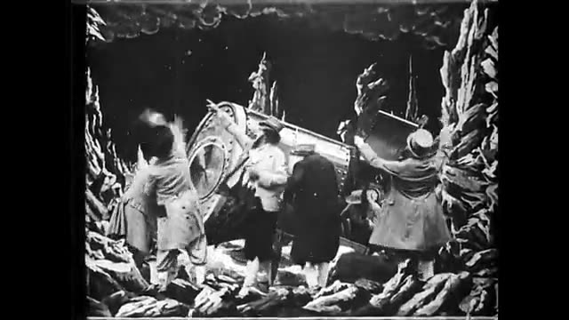
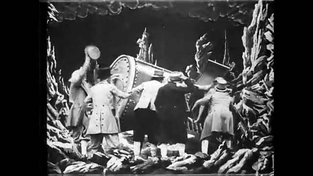
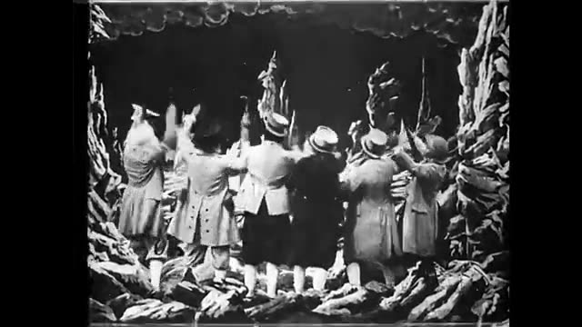
Altı kadar adam sırtı kameraya dönük, kollarını havaya kaldırıp yukarıya bakıyor ve el sallıyor; kapsül artık görünmüyor.
| Kamera | Sabit, tam boy; adamlar çerçevenin önünde. |
|---|---|
| Işık | Düz ışık. |
| Konu / hareket | Altı adam sırt üstü, kollar havada, kayalık manzaraya doğru bakıyor. |
| Doku / renk | Siyah-beyaz, film tanesi, kaya kabartması. |
| Geçiş | Kesit burada bitiyor. |
Static wide shot of a painted lunar rock landscape: six men in long coats and hats stand in a row with their backs to the camera, raising their arms and waving up toward the black sky in triumph, the capsule no longer visible between the jagged white rock spires. Locked-off eye-level camera, 6.8 seconds. Flat lighting, black sky with a painted cloud ceiling. Silent-era black and white film, painted theatrical backdrops, static locked-off proscenium camera, flat stage lighting, heavy film grain, scratches and flicker, 4:3 frame with black pillarbox bars.
Bu istemler ilham içindir. Başkasının videosunu birebir kopyalama; referans al, kendi işini yap.
A static, locked-off wide shot of a theatrical stage: a giant painted cannon with a huge wheel and a long barrel on a wooden scaffold at left, a sailor in a white cap standing on its platform, and a uniformed officer saluting at right before a painted moonlit landscape of mountains and a small town. A blurred troupe of dancing women in short costumes and hats sweeps in from the left. Eye-level proscenium camera, no movement, 2.5 seconds. Flat even stage lighting, high-contrast black and white, heavy film grain. Silent-era black and white film, painted theatrical backdrops, static locked-off proscenium camera, flat stage lighting, heavy film grain, scratches and flicker, 4:3 frame with black pillarbox bars. Static wide stage shot in front of a giant painted cannon on a wooden scaffold: a chaotic crowd of women in short costumes and sailors in white rushes across the stage with motion blur, a sailor hurries down the scaffold steps and runs left, and the women quickly settle into a line holding a flag while a uniformed officer stands at right. Locked-off eye-level proscenium camera, 2.5 seconds. Flat stage lighting, painted moonlit backdrop. Silent-era black and white film, painted theatrical backdrops, static locked-off proscenium camera, flat stage lighting, heavy film grain, scratches and flicker, 4:3 frame with black pillarbox bars. Static wide shot on a theatrical stage with a giant painted cannon at left: a line of women in short striped costumes and straw hats stands at attention holding a flag, a uniformed officer with a sword at right gives orders, and a sailor in white leans a ladder against the cannon and starts climbing while some women raise small horns to their lips. Locked-off eye-level proscenium camera, 5.4 seconds. Flat stage lighting, painted cloudy night backdrop. Silent-era black and white film, painted theatrical backdrops, static locked-off proscenium camera, flat stage lighting, heavy film grain, scratches and flicker, 4:3 frame with black pillarbox bars. Static wide stage shot: a sailor in white stands high on a ladder leaning against a giant painted cannon and works at its large wheel, while a uniformed officer with a sword walks from the right toward the center of the stage and a long line of women in striped costumes and straw hats with a flag waits in formation. Locked-off eye-level proscenium camera, 5.4 seconds. Flat stage lighting, painted moonlit sky. Silent-era black and white film, painted theatrical backdrops, static locked-off proscenium camera, flat stage lighting, heavy film grain, scratches and flicker, 4:3 frame with black pillarbox bars. Static wide stage shot: a uniformed officer with his back partly to camera raises a sword, the giant painted cannon fires and a thick white cloud of smoke billows from its barrel, the sailor on the ladder beside it, women in a line looking on, then blurred figures rush across the foreground. Locked-off eye-level proscenium camera, 3.6 seconds. Flat stage lighting, painted night sky. Silent-era black and white film, painted theatrical backdrops, static locked-off proscenium camera, flat stage lighting, heavy film grain, scratches and flicker, 4:3 frame with black pillarbox bars. Opening on a static wide stage shot of a cheering crowd of men and women in period dress with raised arms in front of a giant painted cannon, then dissolving to a painted night sky: a small bright full moon with a faint frowning face sits at the center, framed by a ring of dark billowing painted clouds with bright rims, tiny stars sparkling. Locked-off camera, the moon slowly growing, 7.6 seconds. Flat theatrical lighting, deep black sky. Silent-era black and white film, painted theatrical backdrops, static locked-off proscenium camera, flat stage lighting, heavy film grain, scratches and flicker, 4:3 frame with black pillarbox bars. Static shot of a painted night sky framed by dark billowing painted clouds with bright rims: a full moon with a human face, smiling slyly with heavy brows, slowly grows larger as if approaching the camera, its cratered surface becoming more detailed, a few stars twinkling. Locked-off frame, steady approach, 7.6 seconds. Self-lit glowing moon against a deep black sky. Silent-era black and white film, painted theatrical backdrops, static locked-off proscenium camera, flat stage lighting, heavy film grain, scratches and flicker, 4:3 frame with black pillarbox bars. Static shot of a huge painted full moon with a carved human face filling most of the frame against a dark cloudy sky: a bullet-shaped metal capsule has just struck and is lodged in the moon's right eye, and the face winces and grimaces, mouth open, its cratered plaster surface in sharp relief. Locked-off frame, moon still slightly growing, 7.6 seconds. Bright self-lit moon, deep black sky. Silent-era black and white film, painted theatrical backdrops, static locked-off proscenium camera, flat stage lighting, heavy film grain, scratches and flicker, 4:3 frame with black pillarbox bars. Static shot of a painted lunar landscape on a theatrical set: jagged tall rock spires on both sides, a cratered misty floor, a huge cratered planet visible in the black sky at the back that fades out, then a riveted cylindrical metal capsule drops from above and thuds onto the ground at a tilt, shaking slightly. Locked-off symmetrical frame, 5.5 seconds. Flat lighting with bright white rocks and a deep black sky. Silent-era black and white film, painted theatrical backdrops, static locked-off proscenium camera, flat stage lighting, heavy film grain, scratches and flicker, 4:3 frame with black pillarbox bars. Static wide shot of a painted lunar landscape of jagged rock spires with a riveted cylindrical metal capsule lying tilted on the ground at center: a man in a tall top hat and a long coat climbs out of a hatch on its side and steps down, followed by a second man in a long coat who appears from behind the capsule, looking around. Locked-off eye-level camera, 6.8 seconds. Flat lighting, bright white rocks, black cloudy sky above. Silent-era black and white film, painted theatrical backdrops, static locked-off proscenium camera, flat stage lighting, heavy film grain, scratches and flicker, 4:3 frame with black pillarbox bars. Static wide shot of a painted lunar rock landscape: three or four men in long coats and hats (one in a top hat, one in a bowler) gather around the open end of a tilted riveted cylindrical capsule, pressing their hands against it and gesturing excitedly to each other, more men stepping out from behind it. Locked-off eye-level camera, 6.9 seconds. Flat lighting, bright white rock spires, black sky. Silent-era black and white film, painted theatrical backdrops, static locked-off proscenium camera, flat stage lighting, heavy film grain, scratches and flicker, 4:3 frame with black pillarbox bars. Static wide shot of a painted lunar rock landscape: five or six men in coats and hats crowd shoulder to shoulder around a riveted cylindrical capsule, their backs partly to camera, heaving and pushing it upright with strained arms, one man leaning over its top. Locked-off eye-level camera, 6.8 seconds. Flat lighting, bright white rock spires, black sky. Silent-era black and white film, painted theatrical backdrops, static locked-off proscenium camera, flat stage lighting, heavy film grain, scratches and flicker, 4:3 frame with black pillarbox bars. Static wide shot of a painted lunar rock landscape: six men in long coats and hats stand in a row with their backs to the camera, raising their arms and waving up toward the black sky in triumph, the capsule no longer visible between the jagged white rock spires. Locked-off eye-level camera, 6.8 seconds. Flat lighting, black sky with a painted cloud ceiling. Silent-era black and white film, painted theatrical backdrops, static locked-off proscenium camera, flat stage lighting, heavy film grain, scratches and flicker, 4:3 frame with black pillarbox bars.